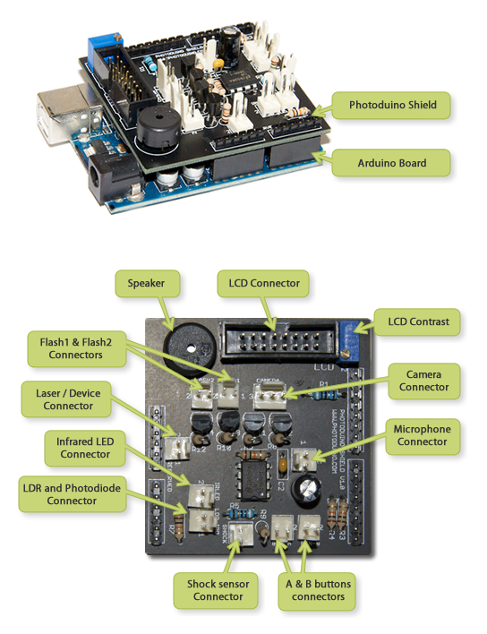

IMPORTANT NOTE: Photoduino Shield 1.0 and 2.0 are not longer supported by us. May be you want to see the Photoduino Shield 3.0.
“Photoduino Shield” is the heart of the Photoduino project. This is a PCB that fits over an Arduino board so that it takes all input and output lines as well the power pins. It has all the necessary electronic components and provides connectors to connect the camera, flashes, sensors and a LCD display with two buttons for user interaction.
- Photoduino Shield 1.0 Is the best option to do at home because it is designed in a single layer.
- Photoduino Shield 2.0 Is designed in 2 layers, making it more difficult to perform at home, but has better placement of the connectors and is a little smaller.
Both versions are fully compatible with the firmware and use the same components.

Parts list
| IMAGE | QTY | PART NAME |
|---|---|---|
 |
1x | Photoduino Shield PCB 1.0 or 2.0 |
 |
1x | Arduino Board (Duemilanove or UNO) |
 |
1x | LM386 Operational Amplifier |
 |
4x | SCR BT149D thyristor |
 |
1x | 10uF electrolitic capacitor |
 |
1x | 10nF ceramic capacitor |
 |
2x | 92 ohms 1/4w resistor |
|
1x | 1M ohms 1/4w resistor |
|
8x | 10K ohms 1/4w resistor |
 |
1x | 10K ohms vertical trimmer |
 |
1x | piezoelectric buzzer |
 |
1x | 50 ways pinheader |
 |
1x | ML16 (16 ways IDC connector) Molex PCB male |
 |
9x | Molex PCB male 2 ways |
 |
1x | Molex PCB male 3 ways |
 |
9x | Molex PCB female 2 ways |
 |
1x | Molex PCB female 3 ways |
 |
1x | LCD display 2×16 Hitachi HD44780 compatible |
 |
1x | Flat cable 16 ways |
 |
1x | ML16 (16 ways IDC connector) Molex PCB female |
 |
2x | Box push buttons (SPNO) |
 |
3x | Jack Stereo connector 3,5 mm female box |
 |
5x | RCA connector female box |
 |
1x | Electret microphone |
 |
1x | Infrared Photodiode |
 |
1x | LDR(Light Dependent Resistor) |
 |
1x | Infrared LED 5mm |
 |
1x | Low power red laser pointer (5 mW) |
 |
1x | Flat Piezo-electric speaker (for shock sensor) |
 |
5x | RCA connector male aerial |
 |
1x | Jack Stereo connector 3,5 mm male |
 |
1x | Jack Stereo connector 2,5 mm male Check here your camera remote connector |
 |
4x | Jack Mono connector 3,5 mm male |
 |
2x | Jack Mono connector 3,5 mm female |
External connections
Here you have the necessary information to make the connections between the Photoduino Shield board and each external components. Although between the board connector and each component has intermediate connectors, the important thing is to maintain connections correctly as shown in the following images.


Some videos (spanish audio)
Introduction
Subtitles: English and Spanish